1992년부터 시설원예·스마트팜 농가에
양액공급기와 관비기를
공급합니다.
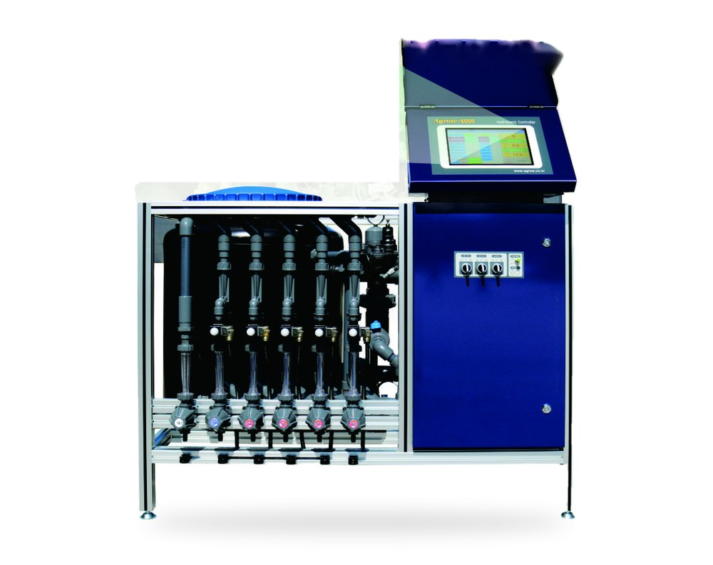
Agrow-7000 PlusHPA-7000 PLUS한가람농업개발은 Agrow 토경관비기, 양액공급기, A⁺-Green 복합환경제어기를 만드는 농업 기자재 전문기업입니다.
1992년부터 연구개발을 이어 왔고, 현재 17개국에 Agrow 시리즈를 수출하고 있습니다. 제품은 농업 현장 실증 시험을 거쳐 출시합니다.
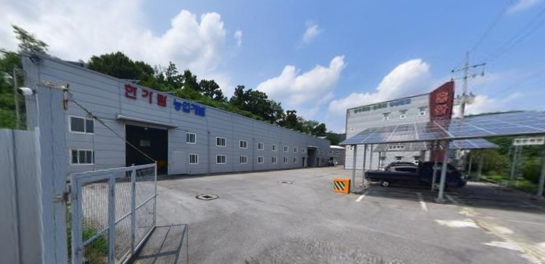
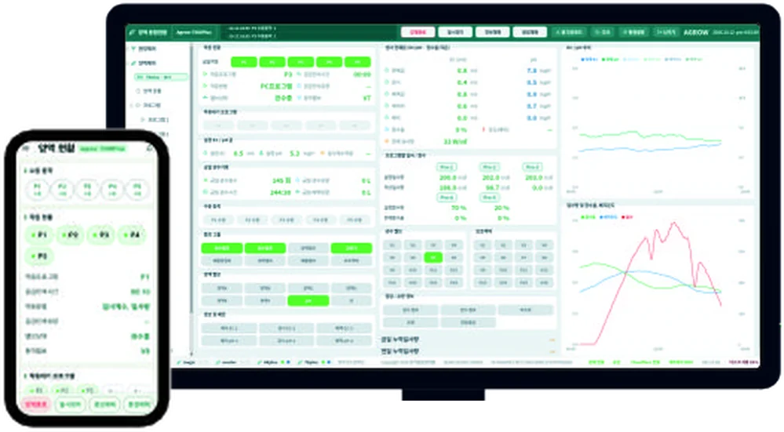
스마트폰 앱 받기 (안드로이드)농장의 Agrow 양액공급기·관비공급기를 통합관리 PC 한 대에 연결하고, 한 화면에서 확인하고 운영합니다.
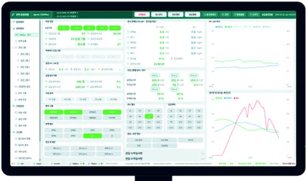
통합관리 PC한 화면에서 전체 확인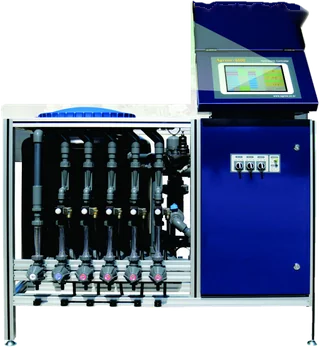
양액공급기Agrow-7000 Plus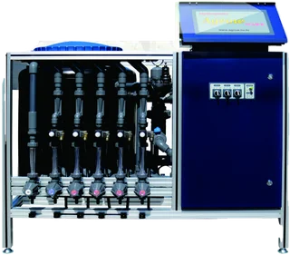
양액공급기Agrow-6000 Plus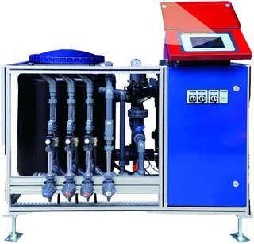
양액공급기Agrow-5000 Master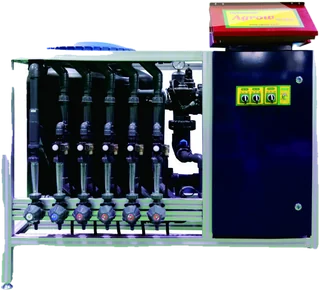
양액공급기Agrow-5000 Magic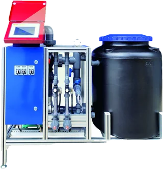
관비공급기Agrow-2000 Star여러 대의 공급기 상태를 PC 한 화면에서 확인합니다.
구역·동별로 나뉜 공급기를 한 곳에서 관리합니다.
사용 중인 Agrow 공급기를 하나로 묶어 운영합니다.
한국농업기술진흥원에서 성능시험과 국가표준시험을 받았습니다.
※ 대상 모델: Agrow-7000 Plus · 6000 Plus · 5000 Master · 5000 Magic
A/S 접수는 전화 · 이메일 · 텔레그램으로 받습니다. 연락처 보기
양액공급기에 쓰이는 부품을 직접 보유하고 있습니다. 모델명과 부품명을 알려주시면 바로 안내해 드립니다.
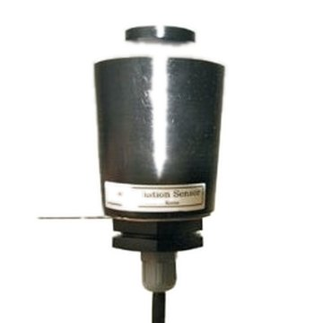
일사센서누적 일사량 제어용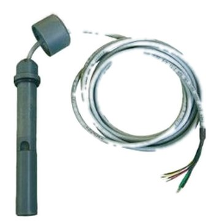
EC센서-1케이블형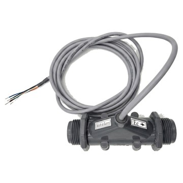
EC센서-2EC A-SENS · 배관 인라인형사양서 PDF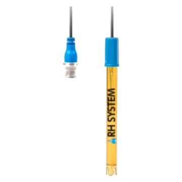
pH센서0~14 pH · BNC · 케이블 3m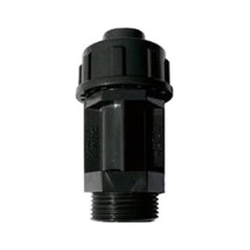
아답터(pH센서)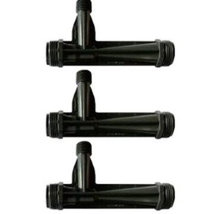
벤츄리관양액 흡입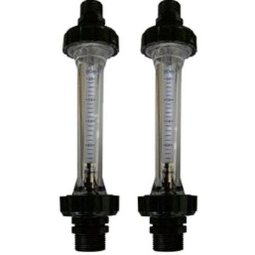
플로우미터 2L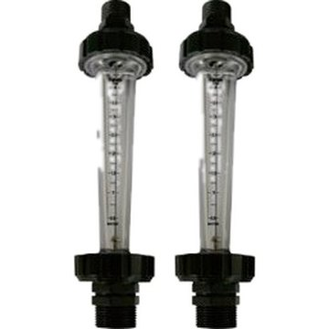
플로우미터 4L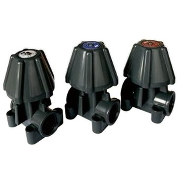
양액조절밸브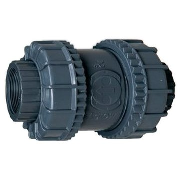
체크밸브 50mm나사 · 결속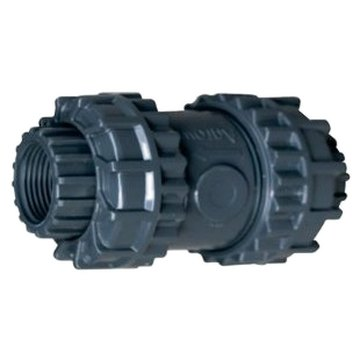
체크밸브 25mm나사 · 결속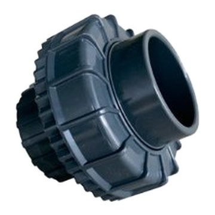
유니온 50mm결속·숫나사·암나사 조합 4종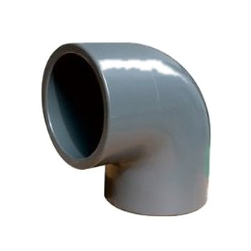
L류 (엘보)50 · 30 · 20 · 15mm, 25mm 45°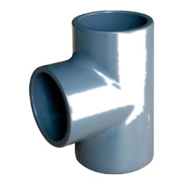
T류 (티)50 · 25mm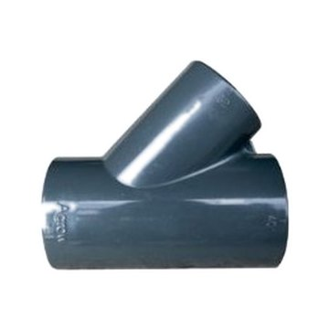
Y자30×25 · 25×25mm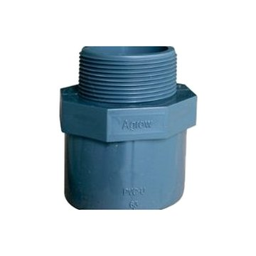
밸브소켓50 · 25mm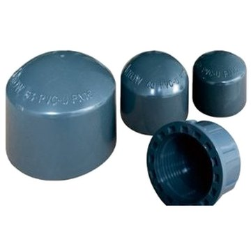
앤드캡 + 플러그캡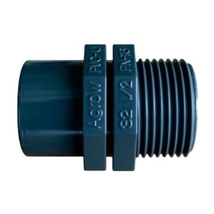
반니쁠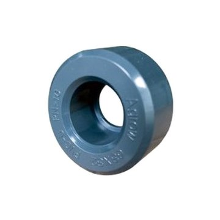
부싱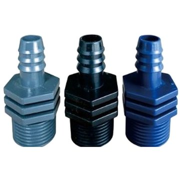
숫나사 / 미늘부품 문의 033-747-5114 · 문의하기
※ APK 설치 시 스마트폰 설정에서 '알 수 없는 소스 허용'을 활성화해야 합니다.
※ PC 프로그램 설치 시 "Microsoft Defender SmartScreen" 경고가 표시될 수 있습니다. "추가 정보" → "실행"을 눌러 설치를 진행하세요. (한가람농업개발 공식 배포 파일입니다.)
이 파일은 비밀번호가 필요합니다.
문의: 033-747-5114